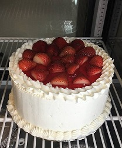
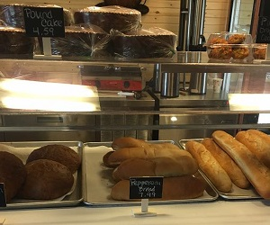
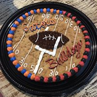

Larry's Bakery & Cafe
320 Dividend Drive, Peachtree City, Ga 30269
(678)-364-0421
Hours: Mon-Sat: 8am-6pm, Sun Closed
Larry's Bakery and Cafe is committed to providing the community with fresh baked delicious products, as well as superior customer service. We are pleased to be a part of the Southwest Atlanta community, serving customers from PTC, Tyrone, Newnan, Fayetteville, Senoia, and other neighboring communites. Come try our products, you won't be disappointed!
Menu Items
| Breads |
Pastries |
Cookies |
| Items | Price |
Items | Price |
Items | Price |
| Pepperoni Bread | $7.99 |
Turnovers | $2.19 |
Big Chocolate Chip | $1.49 |
| Jalepeno Bread | $5.89 |
Muffins | $2.09 |
Big Sugar Cookie | $1.49 |
| French Bread Baguette | $2.69 |
Scones | $2.19 |
Playdough Cookies | $1.49 |
| Corn Bread | $4.19 |
Danish | $2.19 |
Brownie Cookie | $1.49 |
| Cinnamon Bread | $5.89 |
Cinnamon Rolls | $2.19 |
Double Brownie Cookie | $2.89 |
| Italian Bread | $5.89 |
Cannolis | $1.25 |
Seasonal Cut-out Cookies | $1.49 |
| Grandma White Bread | $5.89 |
Cream Puffs | 3/$1.25 |
Wedding Cookies | 6/$3.50 |
| Wheat Bread | $5.89 |
Eclairs | $2.89 |
Almond Cookies | $1.49 |
|  |  |  |  |
Biography
Larry Morales began his career in baking at the age of 18. While starting his journey he was trained under Pastry Chef Regis Mutch learning the art of scratch baking.
Over his career Larry has worked at multiple Italian bakeries as well artisan bakeries such as Montana Mills, Alon’s Bakery, and H & F Bakery.
Larry’s dream of owning and running his own bakery is now a reality. With over 30 years of experience, Larry is ready to use his skills and knowledge of traditional scratch baking to deliver high quality breads, pastries, cakes and desserts. Larry’s Bakery will also feature grab & go breakfast items, and sandwiches.
Follow and like our Facebook page. You can also find us on Yelp!
Our bakery will be celebrating the one year anniversary of our opening on August 18th, 2017. We opened our doors with excitment and anticpation of what our bakery would become to the community. Thank you for your continued support as our journey continues to serve fresh baked goods to our beloved customers.